Web Design
10 Web Design Trends Every Business Should Follow in 2026
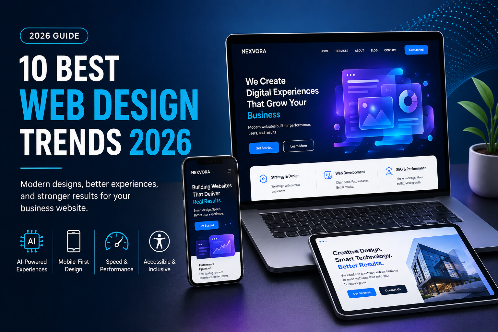
Introduction
Web design continues to evolve as technology, customer expectations, search engines, and online business strategies change. A website that looked modern only a few years ago may now feel slow, difficult to use, or outdated.
In 2026, a professional website is much more than a digital brochure. It can introduce a business to new customers, answer common questions, generate leads, sell products, build trust, and provide support at any time of the day.
However, visual appearance alone is not enough. Modern websites must also load quickly, work correctly on mobile devices, remain accessible to different users, communicate information clearly, and guide visitors toward meaningful actions.
The most useful web design trends are therefore not temporary visual effects. They are practical improvements that make websites easier to use and more valuable for both visitors and businesses.
In this guide, we will explore ten important web design trends every business should consider in 2026. You will also learn the benefits of each trend, practical implementation tips, common mistakes to avoid, and the steps required to create a modern, user-focused website.
Table of Contents
- AI-Powered Personalization
- Minimalist and Purposeful Design
- Mobile-First Responsive Design
- Fast and Performance-Focused Websites
- Accessible and Inclusive Web Design
- Purposeful Micro-Interactions
- Bold Typography and Visual Hierarchy
- Dark Mode and Adaptive Themes
- Conversion-Focused User Experiences
- Sustainable and Efficient Web Design
- Web Design Trends Comparison
- Business Website Implementation Checklist
- Common Web Design Mistakes
- Frequently Asked Questions
- Conclusion
1. AI-Powered Personalization
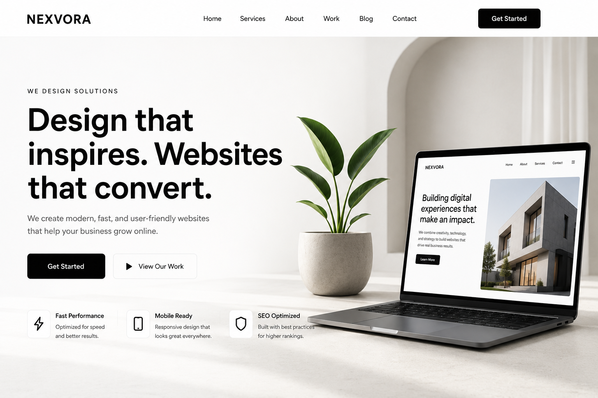
Artificial intelligence is transforming the way websites interact with visitors. Instead of displaying identical content to everyone, modern websites can personalize recommendations, layouts, promotions, and calls to action based on user behavior, location, browsing history, and preferences.
Businesses using AI-driven personalization often experience higher engagement because visitors receive information that is more relevant to their needs. Whether it's recommending products, suggesting blog articles, or providing instant customer support through intelligent chatbots, AI helps create a more useful online experience.
Personalization also improves customer satisfaction. Returning visitors appreciate websites that remember their preferences, making navigation faster and more convenient.
Benefits
- Higher customer engagement
- Better conversion rates
- Personalized shopping experiences
- Smarter customer support
- Improved visitor retention
2. Minimalist and Purposeful Design
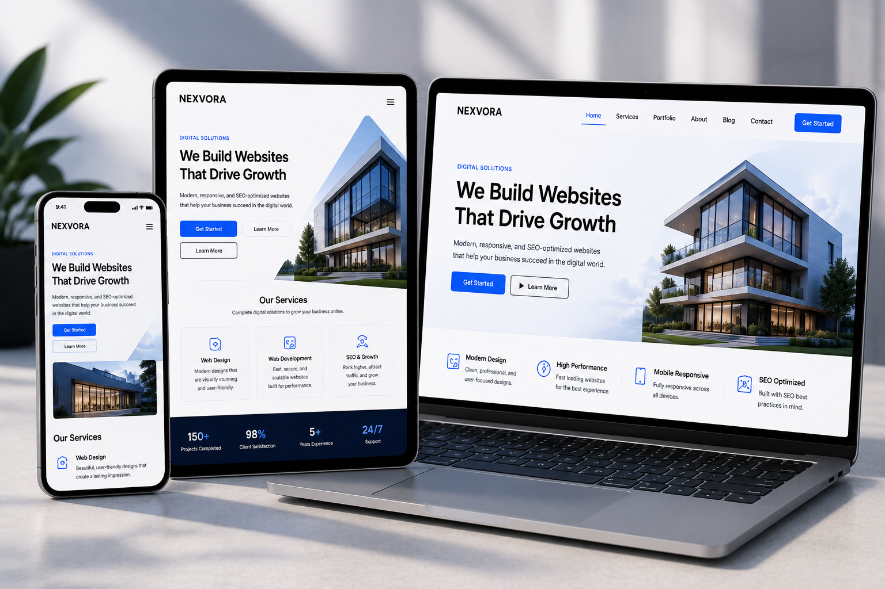
Modern websites are becoming cleaner and easier to navigate. Instead of filling every page with animations, large graphics, and unnecessary content, businesses now focus on clarity and simplicity.
A minimalist layout makes important information easier to find. White space, consistent typography, limited color palettes, and simple navigation allow visitors to concentrate on the content that matters most.
This design philosophy also improves loading speed and creates a more professional appearance across desktop and mobile devices.
Key Features
- Simple page layouts
- Clear navigation menus
- Readable typography
- Consistent branding
- Focused call-to-action buttons
3. Mobile-First Responsive Design
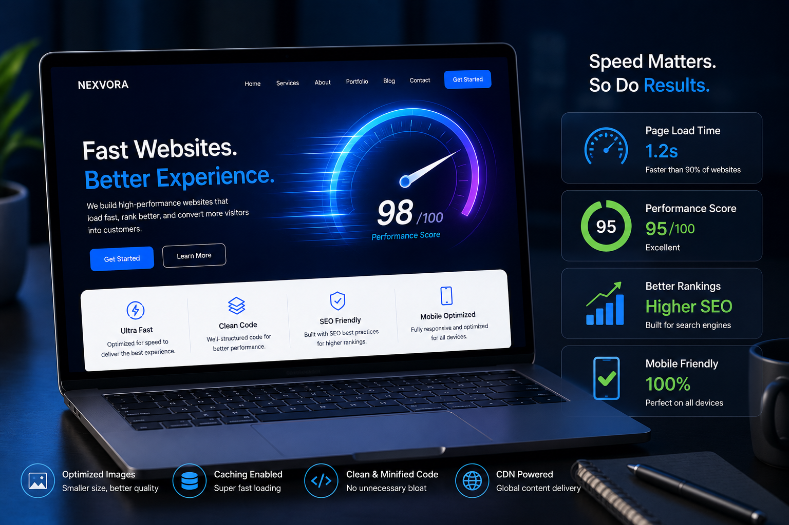
More than half of internet users browse websites using smartphones and tablets. Because of this, businesses should design for mobile devices first instead of adapting desktop layouts later.
Responsive design automatically adjusts content, images, menus, and buttons for different screen sizes. Visitors receive a consistent experience whether they use a smartphone, tablet, laptop, or desktop computer.
Google also prioritizes mobile-friendly websites when ranking search results, making responsive design an essential SEO factor.
Why Mobile-First Matters
- Better Google rankings
- Improved user experience
- Higher engagement
- Lower bounce rate
- More online sales
4. Fast and Performance-Focused Websites
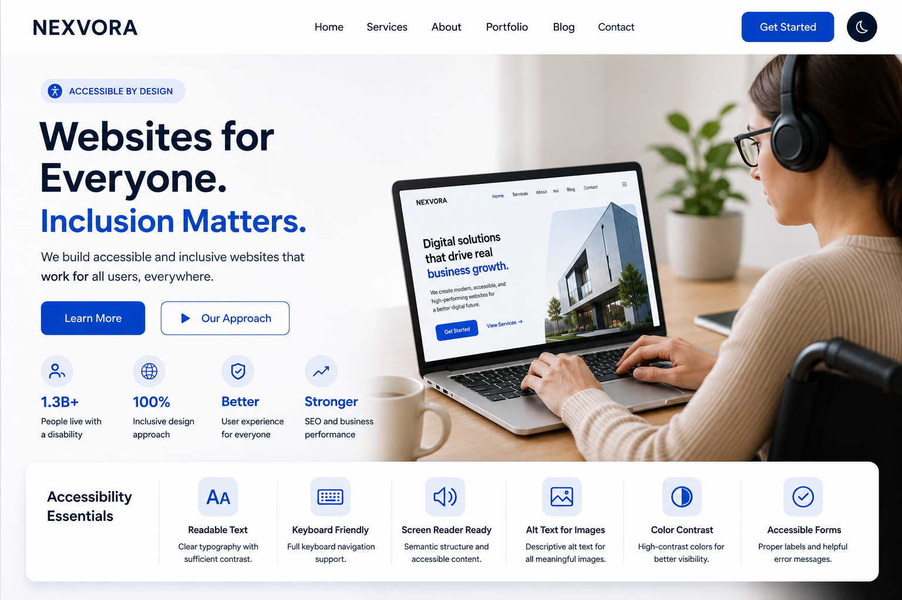
Website speed directly affects user satisfaction, search engine rankings, and business success. Research consistently shows that visitors abandon websites that take too long to load.
Performance optimization includes compressing images, minimizing unnecessary JavaScript, enabling browser caching, using modern image formats such as WebP, and choosing reliable web hosting.
Google's Core Web Vitals continue to reward websites that deliver fast, stable, and responsive experiences.
Performance Tips
- Optimize images
- Enable caching
- Use a CDN
- Reduce unused CSS and JavaScript
- Choose fast hosting
5. Accessible and Inclusive Web Design
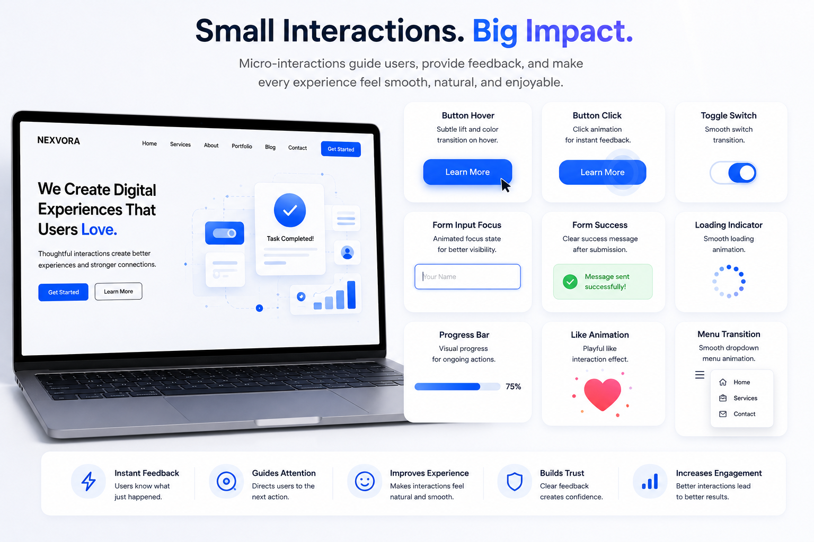
Accessibility ensures that websites can be used by everyone, including people with visual, hearing, motor, or cognitive disabilities.
An accessible website uses readable fonts, sufficient color contrast, descriptive alternative text for images, keyboard navigation, semantic HTML, and properly labeled forms.
Besides helping users, accessibility also improves SEO and demonstrates that a business values inclusivity and equal access.
Accessibility Checklist
- Readable font sizes
- Proper color contrast
- Alt text for images
- Keyboard navigation support
- Accessible contact forms
Quick Comparison of the First Five Trends
| Trend | Main Benefit | Priority |
|---|---|---|
| AI Personalization | Better user engagement | High |
| Minimalist Design | Cleaner user experience | High |
| Mobile-First Design | SEO & mobile usability | Essential |
| Fast Performance | Speed & conversions | Essential |
| Accessibility | Inclusive experience | Essential |
6. Purposeful Micro-Interactions
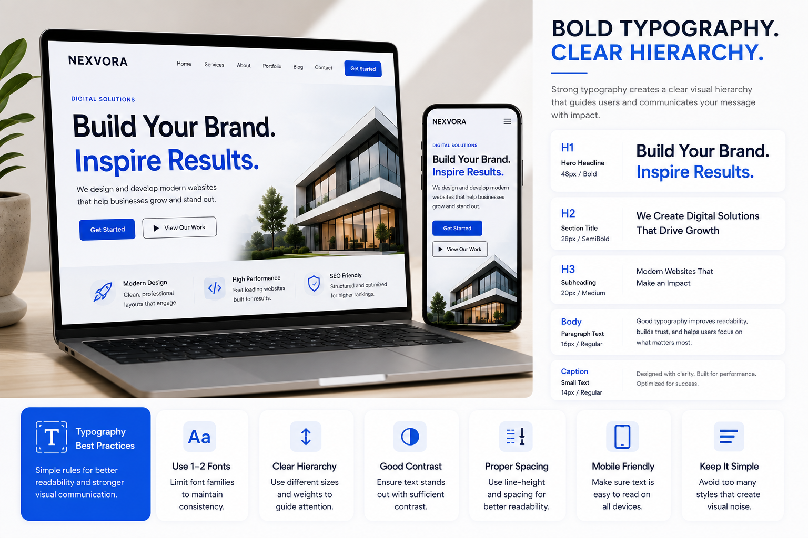
Micro-interactions are small visual responses that appear when a visitor interacts with a website. They can include button animations, loading indicators, form confirmation messages, menu transitions, hover effects, and progress bars.
Although these details may seem small, they help visitors understand what is happening after they perform an action. For example, a button can change appearance after being clicked, while a form can display a clear success message after submission.
In 2026, effective micro-interactions focus on usability rather than decoration. They should provide feedback, guide attention, and make the website feel more responsive without distracting users.
Best Practices for Micro-Interactions
- Keep animations short and smooth.
- Use motion to provide clear feedback.
- Avoid unnecessary effects that slow down the page.
- Make sure interactions work on touchscreens.
- Respect users who prefer reduced motion.
7. Bold Typography and Visual Hierarchy
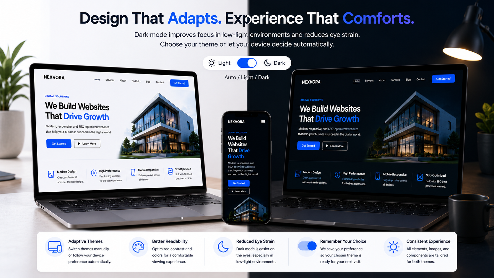
Typography plays an important role in how visitors understand website content. Large headlines, readable body text, consistent spacing, and clear heading levels help users scan a page and identify the most important information.
Bold typography can also strengthen a brand's personality. However, large text should not be used only for visual impact. It must remain readable across mobile devices, tablets, laptops, and desktop screens.
A strong visual hierarchy guides visitors from the main headline to supporting information, benefits, evidence, and calls to action. Without this hierarchy, even useful content may appear confusing or difficult to follow.
Typography Guidelines
- Use no more than one or two main font families.
- Choose readable font sizes for mobile devices.
- Maintain sufficient contrast between text and backgrounds.
- Use heading levels in a logical order.
- Keep spacing consistent throughout the website.
8. Dark Mode and Adaptive Themes
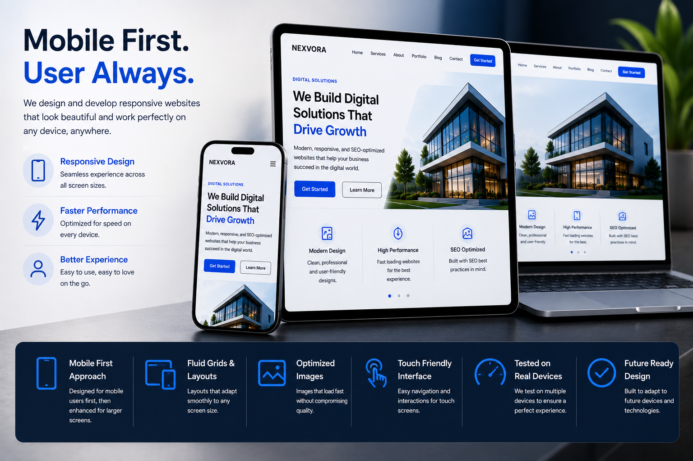
Dark mode gives visitors more control over how they view a website. It can provide a comfortable experience in low-light environments and create a modern appearance for technology, creative, entertainment, and professional websites.
However, a successful dark theme requires more than changing a white background to black. Text, buttons, cards, borders, icons, forms, and images must all be adjusted to maintain readability and visual consistency.
Adaptive websites can automatically follow the visitor's device preference while still providing a manual theme button. The selected preference can also be saved so that the same theme appears during future visits.
Dark Mode Checklist
- Use accessible text and background contrast.
- Test forms, tables, cards, and navigation menus.
- Avoid using pure black across every section.
- Keep brand colors recognizable in both themes.
- Save the visitor's selected theme when possible.
9. Conversion-Focused User Experiences
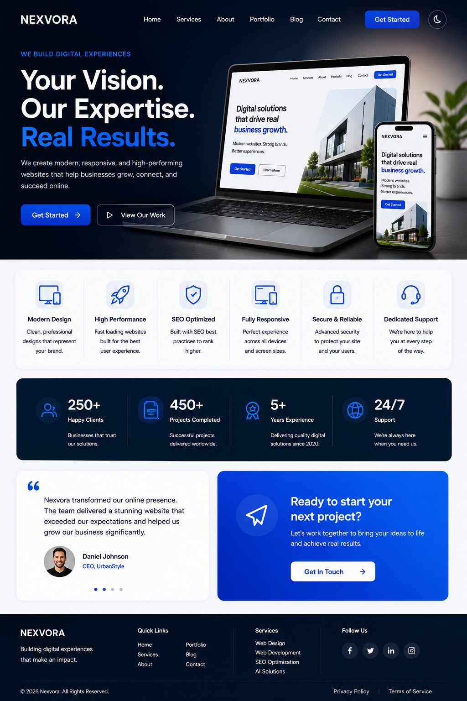
A professional website should support measurable business goals. Depending on the company, these goals may include receiving inquiries, booking appointments, selling products, collecting subscriptions, or encouraging visitors to request a quotation.
Conversion-focused design makes the next step clear. Important pages should include a specific headline, a strong value proposition, visible calls to action, useful supporting information, and trust-building elements.
Businesses should avoid placing too many competing actions on the same page. When visitors are presented with several unrelated buttons, forms, and promotions, they may become uncertain about what to do next.
Elements of a High-Converting Page
- A clear and specific headline.
- A simple explanation of the offer.
- Visible call-to-action buttons.
- Short forms that request only necessary information.
- Customer reviews or other trust signals.
- Fast loading speed across mobile devices.
10. Sustainable and Efficient Web Design
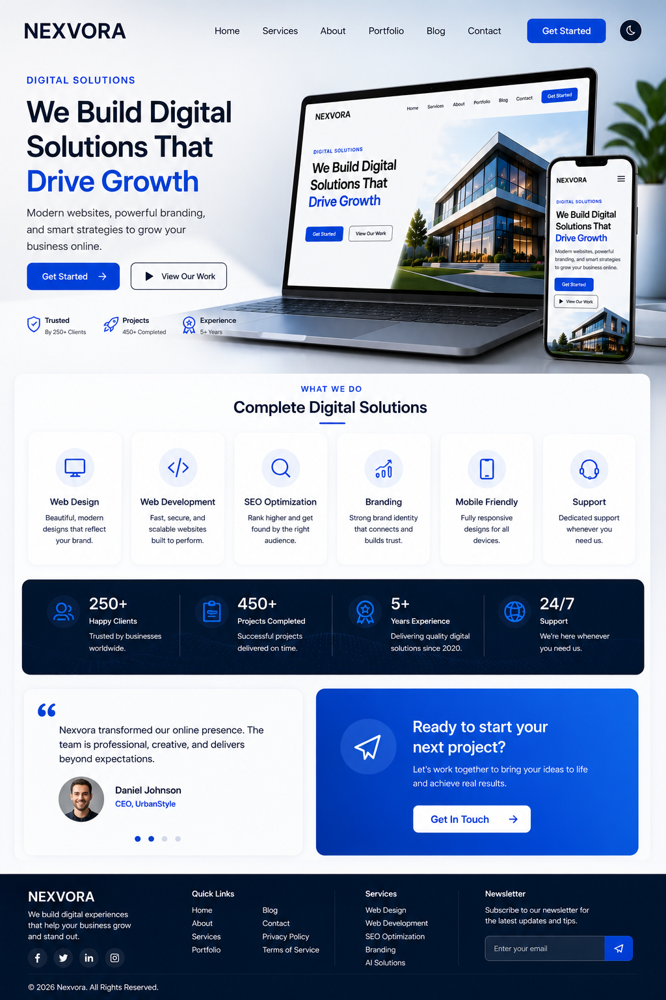
Sustainable web design focuses on building efficient websites that transfer less unnecessary data and require fewer resources. This can include optimized images, clean code, lightweight pages, responsible hosting, and limited use of heavy visual effects.
Efficiency provides practical business benefits as well. Lightweight websites usually load faster, perform better on slower mobile connections, and are easier to maintain over time.
Sustainable design does not require removing every image or animation. Instead, businesses should make intentional decisions and avoid features that increase page size without providing meaningful value to visitors.
Ways to Improve Website Efficiency
- Resize and compress images before uploading them.
- Use modern image formats such as WebP.
- Remove unused CSS and JavaScript.
- Lazy-load images that appear below the visible area.
- Limit autoplay videos and heavy background effects.
- Use caching and reliable website hosting.
Web Design Trends 2026: Full Comparison
The following table compares the main purpose, business value, and recommended priority of each trend.
| Web Design Trend | Main Purpose | Business Benefit | Priority |
|---|---|---|---|
| AI-Powered Personalization | Deliver more relevant content | Higher engagement and conversions | High |
| Minimalist Design | Reduce clutter and distractions | Clearer communication | High |
| Mobile-First Design | Improve mobile usability | Better reach and SEO | Essential |
| Website Performance | Reduce page loading time | Lower bounce rates | Essential |
| Web Accessibility | Support different users | Wider audience access | Essential |
| Micro-Interactions | Provide visual feedback | Improved usability | Medium |
| Bold Typography | Create a clear visual hierarchy | Better content readability | High |
| Adaptive Themes | Offer viewing flexibility | Greater user comfort | Medium |
| Conversion-Focused Design | Guide visitors toward an action | More inquiries and sales | Essential |
| Sustainable Design | Reduce unnecessary resources | Faster and more efficient pages | High |
Business Website Implementation Checklist
Businesses do not need to implement every trend at once. The best approach is to identify the improvements that will have the greatest effect on visitors and business goals.
- Test the website on different mobile screen sizes.
- Check the loading speed of important pages.
- Compress large images and convert them to WebP.
- Make the main call to action easy to identify.
- Improve text and background color contrast.
- Add useful alternative text to meaningful images.
- Test navigation using only a keyboard.
- Remove unnecessary animations and scripts.
- Use clear headings and readable paragraph text.
- Test every contact, quotation, and subscription form.
- Review the website in both light and dark modes.
- Add internal links between related pages and articles.
- Check for broken links and missing images.
- Use analytics to identify pages that need improvement.
Common Web Design Mistakes to Avoid
Following Every Trend Without a Clear Goal
A design trend should only be used when it improves usability, branding, performance, accessibility, or conversions. Adding features only because they are popular can create unnecessary complexity.
Ignoring Mobile Visitors
A website may look excellent on a desktop computer but still provide a poor mobile experience. Menus, buttons, forms, tables, images, and text must be tested on smaller screens.
Using Too Many Animations
Heavy animations can distract visitors, increase page loading time, and create accessibility problems. Subtle movement is usually more effective than constant visual effects.
Creating Unclear Navigation
Visitors should be able to find important pages without searching through several menus. Navigation labels should be simple, familiar, and consistent throughout the website.
Hiding Important Business Information
A visitor should quickly understand what the business provides, who the service is intended for, and how to make contact. Essential information should not be hidden below unnecessary sections.
Neglecting Accessibility
Low color contrast, missing form labels, unclear links, and keyboard navigation problems can prevent some users from accessing important information.
Designing Without Measuring Results
Businesses should use analytics and visitor feedback to understand whether a design is working. Decisions based only on personal preference may not support real customer needs.
Frequently Asked Questions
What is the most important web design trend in 2026?
Mobile-first design, website performance, accessibility, and clear conversion paths are among the most important priorities. They directly affect usability, search visibility, trust, and business results.
Should every business use artificial intelligence on its website?
No. AI should only be added when it solves a real problem or provides meaningful value. Useful examples include customer support, product recommendations, intelligent search, and content personalization.
Is dark mode necessary for every website?
Dark mode is optional. It can improve user choice and visual comfort, but the website must remain readable and consistent in both light and dark themes.
How often should a business redesign its website?
There is no fixed schedule. A redesign may be needed when the website looks outdated, performs poorly on mobile devices, loads slowly, has accessibility problems, or no longer supports current business goals.
Can modern web design improve SEO?
Yes. Mobile usability, fast performance, clear content structure, accessibility, internal linking, and a positive user experience can support better search engine performance. Decorative effects alone do not improve rankings.
How can a small business modernize its website on a limited budget?
Start with high-impact improvements such as mobile responsiveness, compressed images, clear navigation, readable content, visible calls to action, functional forms, and updated business information.
Are website animations bad for performance?
Not always. Small and optimized animations can improve feedback and usability. Problems occur when websites use large files, excessive movement, or scripts that delay important content.
What should a business test before launching a redesigned website?
The business should test mobile responsiveness, loading speed, navigation, forms, buttons, links, images, accessibility, browser compatibility, metadata, analytics, and contact information.
Conclusion
The most valuable web design trends of 2026 are not limited to visual appearance. They focus on creating websites that are faster, clearer, more accessible, more efficient, and better aligned with business goals.
AI-powered personalization, minimalist layouts, mobile-first development, optimized performance, inclusive design, purposeful interactions, strong typography, adaptive themes, conversion-focused pages, and sustainable practices can all improve the digital experience.
However, businesses should not add every new feature simply because it is popular. Each design decision should solve a real problem, support visitors, and contribute to a measurable objective.
A successful website clearly communicates what a business offers, builds trust, and guides visitors toward the next step. When design, content, SEO, performance, and accessibility work together, a website becomes a powerful long-term business asset.
Nexvora helps businesses create responsive, professional, and SEO-ready websites designed for performance and growth. Explore our web design and development services or contact the Nexvora Team to discuss your website project.
Share This Article
Copy Article Link
Copy the article address and share it anywhere.
About the Author
The Nexvora Team creates practical guides about web design, web development, search engine optimization, artificial intelligence, digital tools, and online business growth.
Our goal is to help businesses and creators build stronger, faster, and more effective digital experiences.
Learn More About NexvoraRelated Articles
Top 10 AI Tools for 2026
Discover useful AI tools for content creation, research, productivity, design, coding, and business.
Read Article →How to Build Your First Website
Learn the essential steps required to plan, design, develop, test, and launch your first website.
Read Article →SEO Checklist for Beginners
Follow a practical SEO checklist to improve website content, structure, performance, and search visibility.
Read Article →Stay Updated with Nexvora
Get practical web design, SEO, AI, and digital business tips delivered to your inbox.